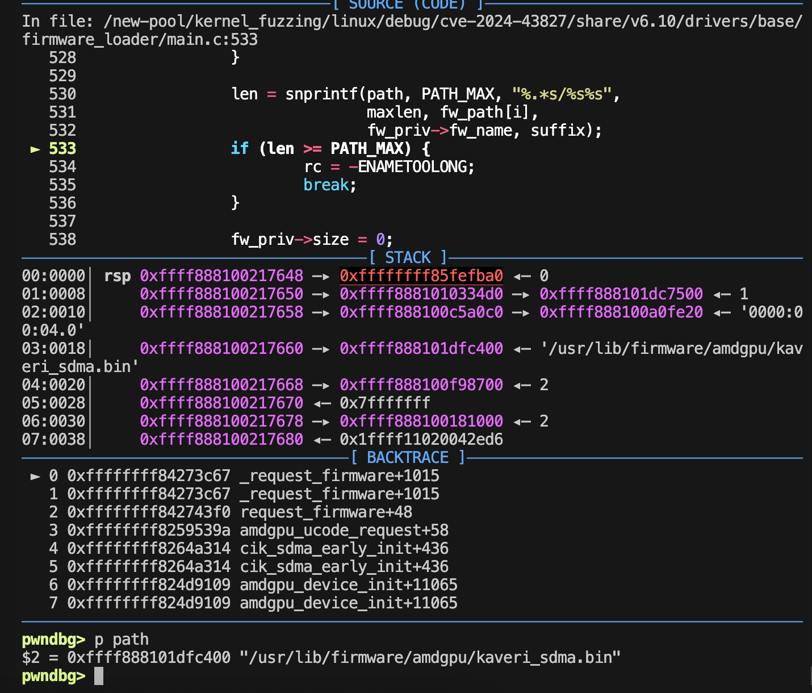
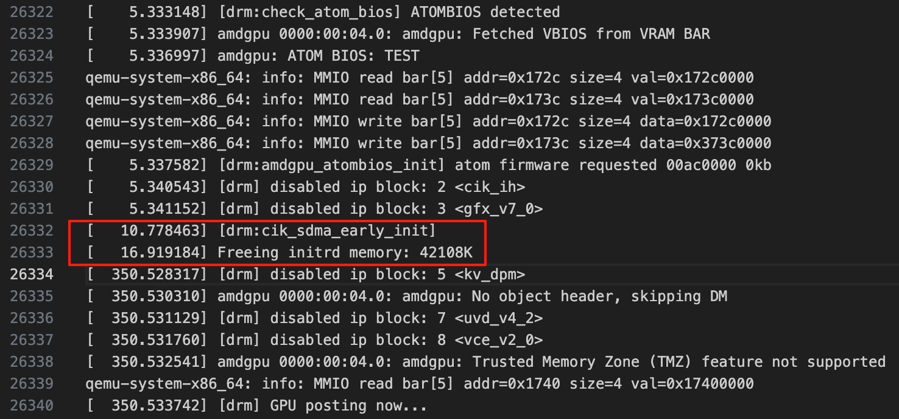

在QEMU中加载自定义固件（firmware）失败#
问题描述#
在我们使用Qemu运行Linux时，Linux内核启动阶段可能会有设备需要加载固件（firmware），但是加载固件会报出错误，提示找不到对应的固件程序。以amdgpu加载kaveri设备为例，在加载的过程中，linux内核日志如下：
[ 1.970638] [drm:cik_sdma_early_init]
[ 1.971289] amdgpu 0000:00:04.0: Direct firmware load for amdgpu/kaveri_sdma.bin failed with error -2
[ 1.972421] amdgpu: cik_sdma: Failed to load firmware "amdgpu/kaveri_sdma.bin"
[ 1.973281] [drm:amdgpu_device_init] *ERROR* early_init of IP block <cik_sdma> failed -19
从日志中可以看到，在加载amdgpu/kaveri_sdma.bin时，出现错误，错误码为-2，我们查阅/include/uapi/asm-generic/errno-base.h这个文件：
/* SPDX-License-Identifier: GPL-2.0 WITH Linux-syscall-note */
#ifndef _ASM_GENERIC_ERRNO_BASE_H
#define _ASM_GENERIC_ERRNO_BASE_H
#define EPERM 1 /* Operation not permitted */
#define ENOENT 2 /* No such file or directory */
#define ESRCH 3 /* No such process */
#define EINTR 4 /* Interrupted system call */
#define EIO 5 /* I/O error */
#define ENXIO 6 /* No such device or address */
#define E2BIG 7 /* Argument list too long */
#define ENOEXEC 8 /* Exec format error */
#define EBADF 9 /* Bad file number */
#define ECHILD 10 /* No child processes */
#define EAGAIN 11 /* Try again */
#define ENOMEM 12 /* Out of memory */
#define EACCES 13 /* Permission denied */
#define EFAULT 14 /* Bad address */
#define ENOTBLK 15 /* Block device required */
#define EBUSY 16 /* Device or resource busy */
#define EEXIST 17 /* File exists */
#define EXDEV 18 /* Cross-device link */
#define ENODEV 19 /* No such device */
#define ENOTDIR 20 /* Not a directory */
#define EISDIR 21 /* Is a directory */
#define EINVAL 22 /* Invalid argument */
#define ENFILE 23 /* File table overflow */
#define EMFILE 24 /* Too many open files */
#define ENOTTY 25 /* Not a typewriter */
#define ETXTBSY 26 /* Text file busy */
#define EFBIG 27 /* File too large */
#define ENOSPC 28 /* No space left on device */
#define ESPIPE 29 /* Illegal seek */
#define EROFS 30 /* Read-only file system */
#define EMLINK 31 /* Too many links */
#define EPIPE 32 /* Broken pipe */
#define EDOM 33 /* Math argument out of domain of func */
#define ERANGE 34 /* Math result not representable */
#endif
看来问题是No such file or directory.我们使用gdb进行调试，在调试过程中，进入了函数_request_firmware之后，会讲fw_path和amdgpu/kaveri_sdma.bin拼接成path，所以，可能就是这里的路径出现错误，导致找不到对应的固件
pwndbg> p fw_path
$9 = {0xffffffff8867fee0 <fw_path_para> "",
0xffffffff85fefd60 "/lib/firmware/updates/6.10.0",
0xffffffff85fefda0 "/lib/firmware/updates",
0xffffffff85fefde0 "/lib/firmware/6.10.0", 0xffffffff85fefe20 "/lib/firmware"}
pwndbg> p path
$11 = 0xffff888101dfc400 "/lib/firmware/updates/6.10.0/amdgpu/kaveri_sdma.bin"
但是在guest os中，该固件程序是存在的。
root@syzkaller:/lib/firmware/amdgpu# ls | grep kaveri
kaveri_ce.bin
kaveri_me.bin
kaveri_mec.bin
kaveri_mec2.bin
kaveri_pfp.bin
kaveri_rlc.bin
kaveri_sdma.bin
kaveri_sdma1.bin
kaveri_uvd.bin
kaveri_vce.bin
明明guest os中，固件是存在的，但是为什么在Linux启动阶段会找不到这个固件呢？
问题分析#
若amdgpu驱动以内置形式编译进内核（CONFIG_DRM_AMDGPU=y），则固件需直接嵌入内核或通过initramfs加载，因为此时根文件系统尚未挂载。反而，如果是以驱动以模块形式加载（CONFIG_DRM_AMDGPU=m），则模块加载时根文件系统已挂载。
在这里，我们将amdgpu以内置形式编译进了内核，但是没有在initramfs上进行相应的配置，所以会出现这个问题。所以，我们解决问题的要点就是，如何将固件嵌入内核，然后通过initramfs加载。
知识补充#
initramfs#
initramfs（Initial RAM File System，初始化内存文件系统）是 Linux 启动过程中一个临时的根文件系统，用于在内核加载后、挂载真实根文件系统之前完成必要的初始化操作。它的核心作用是通过提供用户态环境，解决内核依赖外部驱动和工具的“先有鸡还是蛋”问题[1][2]。
主要功能与特点：#
硬件兼容性支持
内核自身不包含所有硬件驱动，而真实根文件系统可能存储在不同介质（如加密分区、网络存储或 RAID）上。
initramfs包含必要的驱动模块（如存储驱动、文件系统驱动）和工具，确保内核能识别并访问真实根文件系统[1][2]。
启动流程的关键桥梁
内核启动后，首先挂载
rootfs（本质是ramfs），并将initramfs解压到其中，形成临时根文件系统。此时内核从内存中的initramfs加载驱动和工具，而非依赖外部存储设备[1][3]。
核心组件
/init脚本：作为initramfs的入口，负责初始化虚拟文件系统（如挂载/proc、/sys）、加载驱动模块、解密分区（如 LUKS）、激活逻辑卷（LVM）等[2][3]。必要工具与库：包含
mount、modprobe等命令及依赖的动态库（如libc.so），支持用户态操作[2][3]。设备节点：通过
/dev目录提供硬件访问接口[1]。
与
initrd的差异initrd（旧机制）基于块设备，需固定大小且需文件系统驱动，效率较低；initramfs基于ramfs，动态调整大小，直接利用内存缓存机制，无需块设备仿真，更高效灵活[1][3]。
与实际根文件系统的关系
initramfs 是启动过程中加载的临时根文件系统，用于执行一些初始化任务，例如检测和加载必要的驱动程序、挂载设备和配置网络等。在完成初始化任务并确保最终的根文件系统可用后，initramfs 会通过 pivot_root 或 switch_root 交出控制权，切换到真正的根文件系统。切换后，initramfs 通常会被释放或卸载，由真正的根文件系统上的 init 进程继续启动后续的系统服务和应用程序。
initramfs结构#
initramfs是一个临时的根文件系统，包含了跟文件系统中常见的基本组件，在Linux初始化阶段会有用到。其中包括了/bin、/dev、/etc、/lib、/sbin、/proc、/sys、/init等。其中值得注意的是，/init目录中存储的是initramfs的主启动脚本，在启动过程中，内核会执行该脚本，该脚本会创建整个initramfs，包括加载驱动程序、挂在文件系统、复制固件等。等Linux内核初始化完成之后，再通过pivot_root或switch_root将控制权移交给根文件系统上的init进程。
工作流程：#
内核加载 Bootloader（如 GRUB）将内核和
initramfs加载到内存，传递参数（如root=/dev/sda1）[2][3]。挂载临时根文件系统 内核解压
initramfs到rootfs，形成临时根环境，并执行/init脚本[1][2]。初始化操作
挂载虚拟文件系统（
/proc、/sys、/dev）。加载存储驱动、解密分区、激活逻辑卷。
挂载真实根文件系统到临时目录（如
/mnt/root）[2][3]。
切换至真实根文件系统 通过
switch_root或pivot_root将控制权移交真实根文件系统，释放initramfs内存[1][2]。
应用场景示例：#
加密根分区：通过
cryptsetup解密 LUKS 分区后挂载[2]。逻辑卷管理（LVM）：激活卷组并挂载逻辑卷[2]。
网络根文件系统（NFS）：配置网络后挂载远程存储[1]。
生成与定制：#
工具支持：使用
dracut（Fedora/RHEL）、mkinitcpio（Arch Linux）、update-initramfs（Debian/Ubuntu）自动生成[2]。手动构建：可通过
busybox创建精简环境，打包为 CPIO 格式并压缩[3]。
总结：initramfs 是 Linux 启动过程中不可或缺的过渡机制，通过提供临时的用户态环境，确保内核能灵活应对多样化的硬件和存储配置，最终挂载真实根文件系统并完成系统初始化[1][2][3]。
解决方法#
我们以Debian/Ubuntu发行版为例来解决该问题，其余的发行版自己再去查一下资料吧hhh。如上介绍可知，我们只需要在initramfs初始化阶段，将amdgpu的固件加载进去就可以。
在Debian/Ubuntu中，我们可以通过向目录/etc/initramfs-tools/hooks/中添加脚本，将amdgpu/kaveri_sdma.bin复制到initramfs中就可以了。
首先我们先安装一下依赖
sudo apt install initramfs-tools
具体来说，我们在/etc/initramfs-tools/hooks/中创建脚本amdgpu-firmware，然后输入以下脚本代码：
#!/bin/sh
mkdir -p "${DESTDIR}/lib/firmware/"
cp -r /lib/firmware/amdgpu "${DESTDIR}/lib/firmware/"
然后为该脚本赋予执行权限，并且更新initramfs即可
chmod +x /etc/initramfs-tools/hooks/amdgpu-firmware
update-initramfs -u -k $(uname -r)
执行了以上代码之后，我们可以看到终端中出现了以下输出：
root@guestos:/etc/initramfs-tools/hooks# update-initramfs -u -k $(uname -r)
update-initramfs: Generating /boot/initrd.img-6.10.0
W: Kernel configuration /boot/config-6.10.0 is missing, cannot check for zstd compression support (CONFIG_RD_ZSTD)
W: Possible missing firmware /lib/firmware/amdgpu/ip_discovery.bin for built-in driver amdgpu
W: Possible missing firmware /lib/firmware/amdgpu/vega10_cap.bin for built-in driver amdgpu
W: Possible missing firmware /lib/firmware/amdgpu/sienna_cichlid_cap.bin for built-in driver amdgpu
W: Possible missing firmware /lib/firmware/amdgpu/navi12_cap.bin for built-in driver amdgpu
W: Possible missing firmware /lib/firmware/amdgpu/aldebaran_cap.bin for built-in driver amdgpu
W: Possible missing firmware /lib/firmware/amdgpu/gc_11_0_0_toc.bin for built-in driver amdgpu
W: Possible missing firmware /lib/firmware/amdgpu/sienna_cichlid_mes1.bin for built-in driver amdgpu
W: Possible missing firmware /lib/firmware/amdgpu/sienna_cichlid_mes.bin for built-in driver amdgpu
W: Possible missing firmware /lib/firmware/amdgpu/navi10_mes.bin for built-in driver amdgpu
W: Possible missing firmware /lib/firmware/amdgpu/gc_11_0_3_mes.bin for built-in driver amdgpu
此时应该就可以了，我们可以使用以下命令查看一下结果：
检查文件initrd.img-xxx是否存在
ls -l /boot/initrd.img-$(uname -r)
检查内容是否正确
# 先安装一个依赖
sudo apt install lz4
# 然后检查内容
lsinitramfs /boot/initrd.img-$(uname -r) | grep amdgpu/kaveri_sdma.bin
可以得到如下执行结果：
root@guestos:/etc/initramfs-tools/hooks# lsinitramfs /boot/initrd.img-$(uname -r) | grep amdgpu/kaveri_sdma.bin
usr/lib/firmware/amdgpu/kaveri_sdma.bin
虽然我们看到的路径是usr/lib/firmware/amdgpu/kaveri_sdma.bin而非/lib/firmware/amdgpu/kaveri_sdma.bin，案例来说这没有关系，因为/lib本就是链接到/usr/lib的
lrwxrwxrwx 1 root root 7 4月 22 2024 lib -> usr/lib
但是，我重新启动了linux内核，发现问题还是没有解决。那么让我们来重新自己看一下代码，
/* direct firmware loading support */
static char fw_path_para[256];
static const char * const fw_path[] = {
fw_path_para,
"/lib/firmware/updates/" UTS_RELEASE,
"/lib/firmware/updates",
"/lib/firmware/" UTS_RELEASE,
"/lib/firmware"
};
/*
* Typical usage is that passing 'firmware_class.path=$CUSTOMIZED_PATH'
* from kernel command line because firmware_class is generally built in
* kernel instead of module.
*/
module_param_string(path, fw_path_para, sizeof(fw_path_para), 0644);
MODULE_PARM_DESC(path, "customized firmware image search path with a higher priority than default path");
Linux内核会默认从这几个地方获取firmware，那么我们是不是可以通过指定这个内核模块参数来指定我们想要的fw_path_para。因此我们在qemu启动命令行参数的-append中加入firmware_class.path=/usr/lib/firmware，让Linux内核从这个地方找固件。现在让我们重新启动qemu，虽然path已经成功改成我们想要的样子了，但是似乎还是没有用…

所以上，可以排除是路径的问题，我猜测，可能还是系统没有使用我们新的根文件系统。
我在吃火锅的时候突然想到，之前qemu中好像有一个initrd的命令行参数，当时用不到就没有太注意，不过算是在脑子里留下了印象。所以，我从Guest OS中将/boot/initrd.img-6.10.0复制出来，然后在qemu中添加一个新的命令行参数
-initrd ./share/initrd/initrd.img-6.10.0
然后重启linux内核，成啦！从以下图中就可以看到，，已经成功加载了

补充#
Linux中设备固件（firmware）应该去哪里下啊？？#
如果之前没有下载linux的固件，并且不知道应该去哪里下载，可以访问这个链接：kernel-firmware/linux-firmware ，这个仓库包含所有从旧驱动程序中提取的固件镜像，以及从未被允许包含在 GPL 工作中的各种新固件镜像，但已被允许在单独的许可下重新分发。
在执行update-initramfs命令过程中提示找不到/lib/modules/6.10.0/kernel#
如果遇到这个问题，应该就是因为内核模块不存在，此时我们需要下载或编译安装linux内核模块
如果你是使用Ubuntu发行版，那么可以先尝试使用apt search命令搜索是否有对应版本的linux-headers和linux-modules。你的系统内核的具体版本可以使用uname -r来查看。例如，以6.11.0为例，我们就可以找到对应的linux-headers如下：
linux-headers-6.11.0-17-generic/noble-updates 6.11.0-17.17~24.04.2 amd64
linux-headers-6.11.0-19-generic/noble-updates,noble-security 6.11.0-19.19~24.04.1 amd64
linux-headers-6.11.0-21-generic/noble-updates,noble-security 6.11.0-21.21~24.04.1 amd64
linux-headers-6.11.0-24-generic/noble-updates,noble-security 6.11.0-24.24~24.04.1 amd64
linux-headers-6.11.0-25-generic/noble-updates,noble-security 6.11.0-25.25~24.04.1 amd64
再次用apt search搜索linux-modules，可以看到结果：
linux-modules-6.11.0-17-generic/noble-updates 6.11.0-17.17~24.04.2 amd64
linux-modules-6.11.0-19-generic/noble-updates,noble-security 6.11.0-19.19~24.04.1 amd64
linux-modules-6.11.0-21-generic/noble-updates,noble-security 6.11.0-21.21~24.04.1 amd64
linux-modules-6.11.0-24-generic/noble-updates,noble-security 6.11.0-24.24~24.04.1 amd64
linux-modules-6.11.0-25-generic/noble-updates,noble-security 6.11.0-25.25~24.04.1 amd64
我们选择一个合适的版本安装即可。
但大多数情况下，我们是无法在apt上搜索到与本地的内核版本对应的安装包的，因此我们需要自己的编译构建。这里没有什么太好的办法，只能编译安装。
具体来说，我们在启动Guest OS时，往往会自己编译出一个内核并启动，我的一个很蠢的做法就是，将编译这个内核的源码，通过qemu的共享目录，一整个拷贝到Guest OS中，然后在Guest OS中编译可能用到的内核模块，然后使用make modules_install安装这些模块，通过这个方式，我们就可以在Guest OS中安装内核版本对应的内核模块。